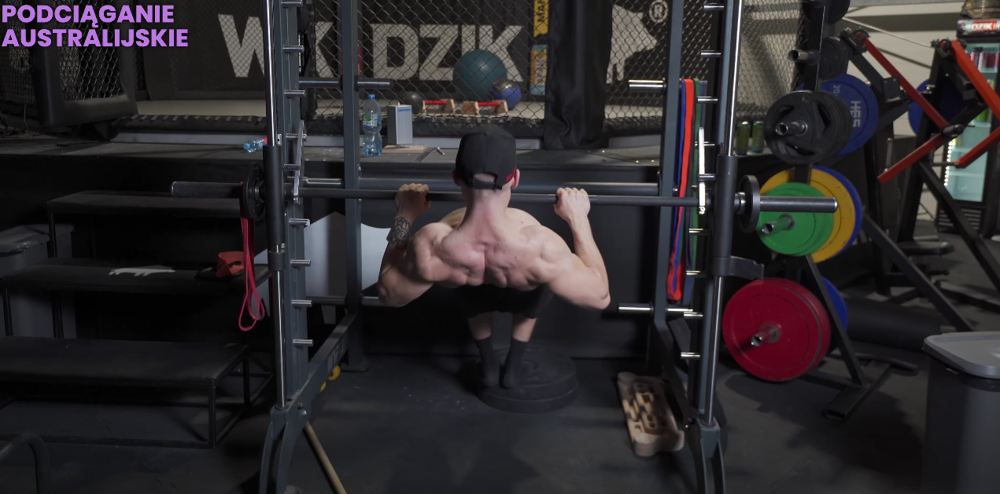
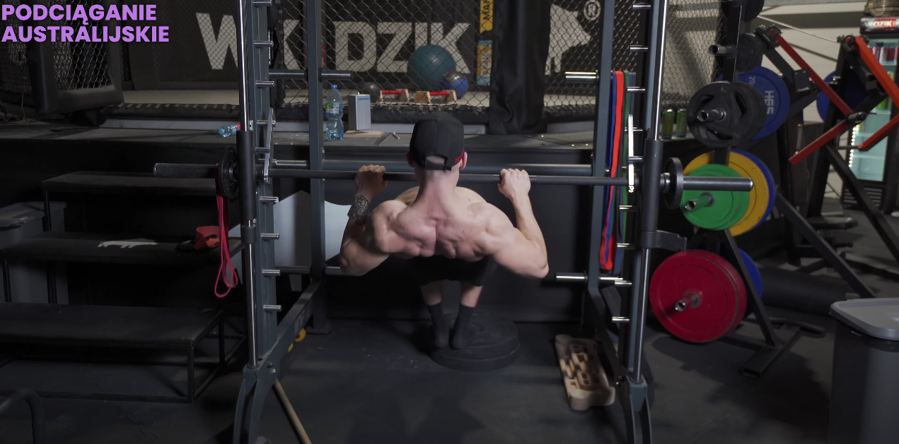

PODCIĄGANIE AUSTRALIJSKIE
 

1. Ustaw sztangę (najlepiej na maszynie smitha) tak nisko, aby przy wyproście rąk, móc stabilnie podpierać się nogami, utrzymując prosty tułów.
2. Przyjmij pozycję, w której stopy będą spoczywać stabilnie na podłodze (lub podwyższeniu), dłonie będą trzymały sztangę nachwytem nieco szerzej niż szerokość obręczy barkowej, a tułów będzie ustawiony równolegle do podłoża.
3. Napnij brzuch, pośladki i ściągnij łopatki.
4. Rozpocznij ruch podciągania, chcąc zbliżyć klatkę piersiową do sztangi.
5. Kontrolując ruch, powróć do pozycji startowej.
Na samym początku możesz przybierać pozycję bardziej pionową, a więc nie ustawiać tułowia równolegle do podłoża, zrobisz to ustawiając sztangę nieco wyżej.
Możesz wybrać podchwyt, wówczas złap sztangę na szerokość barków.